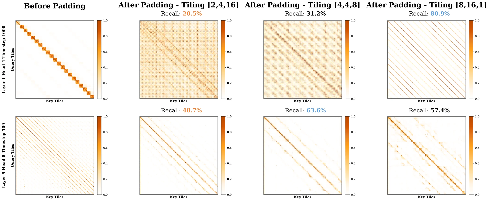

Veda: full-attention tile distillation for video DiTs.
90% sparsity at perceptual parity. 95% sparse 720P generation:
19.4 min → 3.8 min. 5.1× end-to-end acceleration.
Tile selection as supervised ranking: max-pooled full attention provides target scores, and a KL objective aligns the predicted per-query distribution.
Per-layer, per-head tile shape (pt, ph, pw) selected by offline search to minimize sparse-output error under a fixed hardware tile budget.
A ThunderKittens Hopper kernel fetches only selected K/V tiles via TMA and overlaps sparse gathers with WGMMA compute, reaching ~80% of FA3 MFU.
Human preference, VBench, and Hopper latency under identical sparse-kernel infrastructure. Hover any chart for exact values.
Per-layer latency against FlashAttention-3 at 720P and 480P across Waver-T2V and Wan2.1. Sparse-mask preparation is included.
Left: FlashAttention-3. Right: Veda sparse attention. Drag the handle; switch clips below.
Generated by Veda. Hover to play; click any clip to enlarge.
The central question is not how many tiles can be removed, but whether the retained tile mask preserves the full-attention ranking that controls the softmax distribution.
When sparsity exceeds the moderate regime, prior sparse-attention methods do not simply lose texture or prompt fidelity. They produce a distinct failure mode: water-ripple warping across surfaces, local geometric distortion, and temporal flicker between adjacent frames. These artifacts indicate broken spatiotemporal connectivity in the attention graph, rather than ordinary semantic hallucination from the dense generator.
To separate sparsity from mask quality, we hold the budget fixed at 90% sparsity and change only the selected tile mask. The Oracle mask, obtained by max-pooling the full-attention map and retaining the Top-k key tiles for each query tile, preserves high-fidelity structure. Average pooling, under the same budget, fails. This controlled comparison shows that degradation is governed by alignment with the tile-wise full-attention ranking. Tile recall makes the gap measurable: Veda recovers 66.4% of oracle-selected tiles, whereas average pooling recovers 34.2%.

Video DiT heads are not exchangeable. Some heads concentrate on local spatial structure, while others connect temporally distant regions; these patterns also evolve across diffusion timesteps. A uniform tile layout can split high-affinity neighborhoods for one head and merge unrelated tokens for another, increasing intra-tile variance and reducing oracle-mask recall.
[4,4,8]: +9.5% Overall, +7.2% Motion.The following derivation connects the observed artifacts to the mathematical requirements of stable high-sparsity attention.
For one query, attention is the gradient of a Log-Sum-Exp potential over logits uj = q·kj. Because this potential is dominated by high-energy keys, dropping a dominant key changes the normalization constant rather than adding a small local perturbation. The remaining keys are renormalized by Z/Ẑ > 1, so probability mass is reassigned to lower-energy or irrelevant tokens. At video scale, this produces coherent structural errors: the sparse model follows the wrong connectivity graph with high confidence.
Ψ(u)=τ·log Σj exp(uj/τ) ⟹ P̃j = (Z / Ẑ) · Pj > Pj
A tile score must be estimated from compressed query and key representations. Average pooling preserves only the centroid. However, the dot product decomposes into a mean-product term and a covariance term; two tiles with similar means can still have different high-frequency structure and therefore different attention scores. Veda augments the mean with extrema. By the Bhatia-Davis inequality, the variance of a bounded variable is controlled by its mean, maximum, and minimum, so {avg, max, min} provides a compact estimate of both centroid and spread.
q·k = d·μqμk + d·Cov(q,k) · σ² ≤ (M−μ)(μ−m)
Let each token be decomposed into a tile mean plus a residual. The score error induced by compressing a tile is bounded by the product of query- and key-side intra-tile standard deviations. Under 3D RoPE, video tokens lie on a spatiotemporal manifold, but different heads induce different anisotropic metrics on that manifold. A fixed raster layout can scatter high-affinity temporal neighbors or merge unrelated spatial regions. Head-Aware Tiling searches (pt, ph, pw) per head, minimizing the sparse-output error and reducing the variance term that controls score estimation.
E = |Σi ⟨rqi, rki⟩| ≤ B · σq · σk
Top-k selection is discrete, but the ranking that induces it is continuous. Veda therefore supervises the estimator before thresholding: max-pooled full attention defines the target tile distribution, and the estimator produces a soft distribution over key tiles. Minimizing row-wise KL divergence aligns the probability geometry of the predicted scores with the full-attention teacher. Locally, KL is a Fisher-weighted quadratic form, so errors are penalized in the natural geometry of the simplex rather than in raw Euclidean score space. After this continuous alignment, Top-k selection can be applied as a hardware-executable binary mask.
Ldistill = DKL(Atgt || Apred) ≈ 1/2 · ΔθTI(θ)Δθ
Stable high-sparsity attention requires four aligned choices: preserve the oracle ranking, estimate tile scores with sufficient statistics, group tokens with head-aware low-variance tilings, and train the ranking through KL distillation before Top-k discretization. Veda combines these conditions so the sparse mask remains aligned with full attention even at 95% sparsity.
@inproceedings{han2026veda, title = {Veda: Scalable Video Diffusion via Distilled Sparse Attention}, author = {Han, Shihao and Yang, Hao and Mei, Xiaofeng and Hu, Xinting and Jiang, Yi and Qi, Xiaojuan}, booktitle = {International Conference on Machine Learning (ICML)}, year = {2026} }